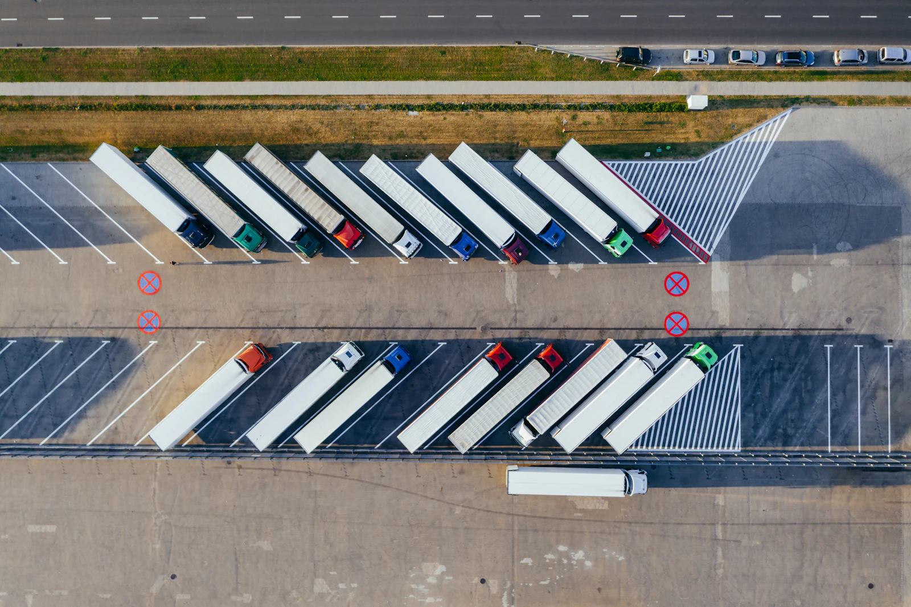

Surveillance de plateformes logistiques par drone
La valeur stationne dehors.
Le drone fait le tour.
Entrepôts, parcs poids lourds, quais. Un drone en station sur place, suivi depuis votre PC sécurité.
Chaque ronde se termine par un relevé.
Le drone ne fait pas que filmer. Il fait l'état des lieux de la plateforme.

Ronde de 22:00 · parking poids lourds- Remorques à quai18
- Remorques sur parking34
- Poids lourds en attente6
- Portails1 ouvert sur 4
- ClôtureAucune anomalie
- Stockage extérieurAucune anomalie
Valeurs d'illustration. Les éléments relevés sont définis avec vous.
Le même trajet, à chaque ronde.
Chaque point de passage est filmé et horodaté. Les rondes suivent un planning fixe, de jour comme de nuit.
- Station
- Portail nord
- Quais
- Parking poids lourds
- Clôture est
- Stockage extérieur
- Station
Une alarme entre deux rondes ? Le drone part directement sur la zone. Vous voyez la scène avant d'envoyer quelqu'un.
Vos questions.
Les éléments à relever sont définis avec vous : remorques à quai, véhicules présents, état des portails, anomalies. Le relevé est horodaté et conservé dans l'historique.
Les trajectoires sont définies avec vous. Elles tiennent compte des zones de circulation et des horaires d'exploitation. Le cadre précis est fixé pendant l'étude.
Oui, c'est le principe. Une alarme ou une détection caméra peut déclencher une mission. La compatibilité précise est confirmée pendant l'étude de votre site.
Oui. Il emporte une caméra visible et une caméra thermique, pour des vols de jour comme de nuit.
Jusqu'à 40 ha par vol, selon la configuration du site. Entre deux vols, le drone se recharge seul dans sa station.
Non. Le drone renforce la capacité d'observation et accélère la levée de doute. Vos équipes gardent la décision et interviennent quand c'est nécessaire.
Oui. FLEAT centralise le suivi de plusieurs sites dans une interface unique.
Les conditions météo font partie des contraintes étudiées dès la conception. Les scénarios de mission en tiennent compte.
Nous regardons notamment : emprise des parkings et zones de stockage, flux de véhicules et horaires d'exploitation, points d'accès et lignes de clôture, emplacement possible de la station, dispositifs de détection existants. Un drone ne s'installe pas partout : la faisabilité est étudiée avant tout engagement.
Étudions votre site.
Décrivez-nous votre site et vos enjeux. Nous évaluons la faisabilité d'un dispositif adapté à vos contraintes.